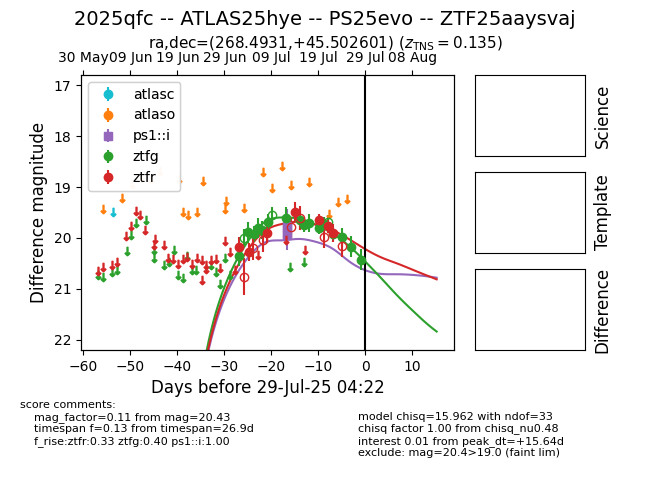

Target 2025qfc at 2025-07-29 04:22, see:
FINK: fink-portal.org/2025qfc
Lasair: lasair-ztf.lsst.ac.uk/objects/2025qfc
ALeRCE: alerce.online/object/2025qfc
TNS: wis-tns.org/object/2025qfc
YSE: ziggy.ucolick.org/yse/transient_detail/2025qfc
alt names
ZTF25aaysvaj (ztf,fink)
2025qfc (tns,yse)
PS25evo (panstarrs)
ATLAS25hye (atlas)
coordinates:
equatorial (ra, dec) = (268.4931,+45.50260)
galactic (l, b) = (72.2215,+28.68649)
photometry
last ps1::i=19.79, ztfg=20.43, ztfr=19.90
3 ps1::i, 16 ztfg, 7 ztfr detections
